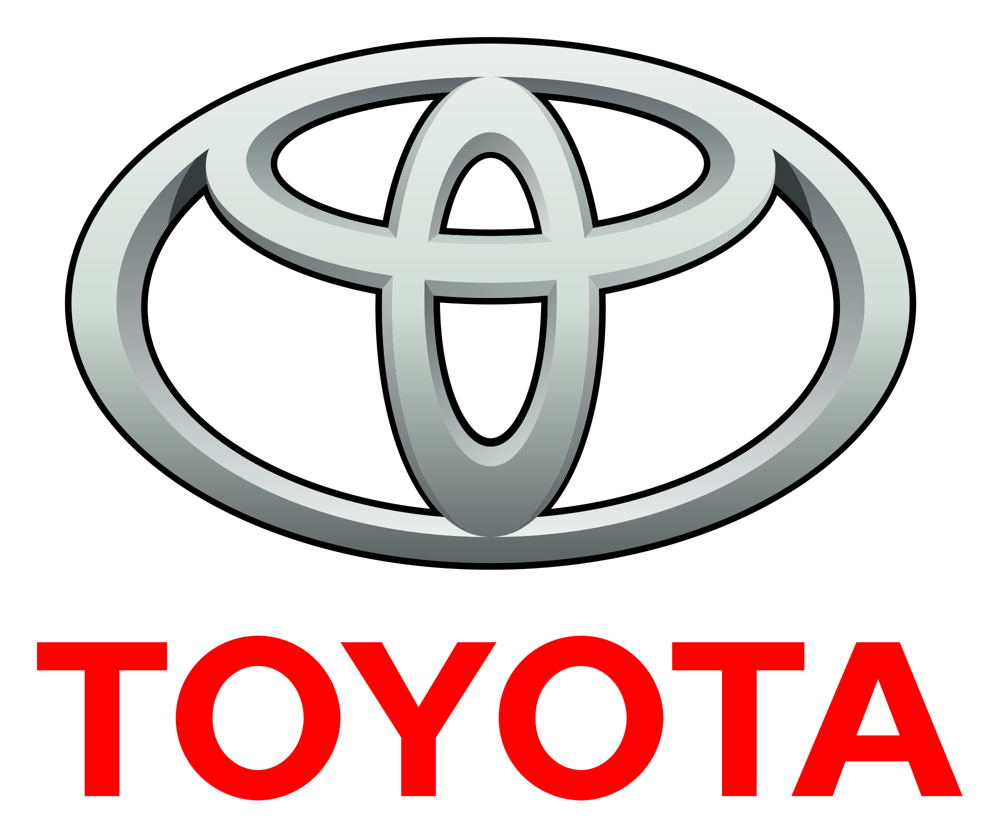
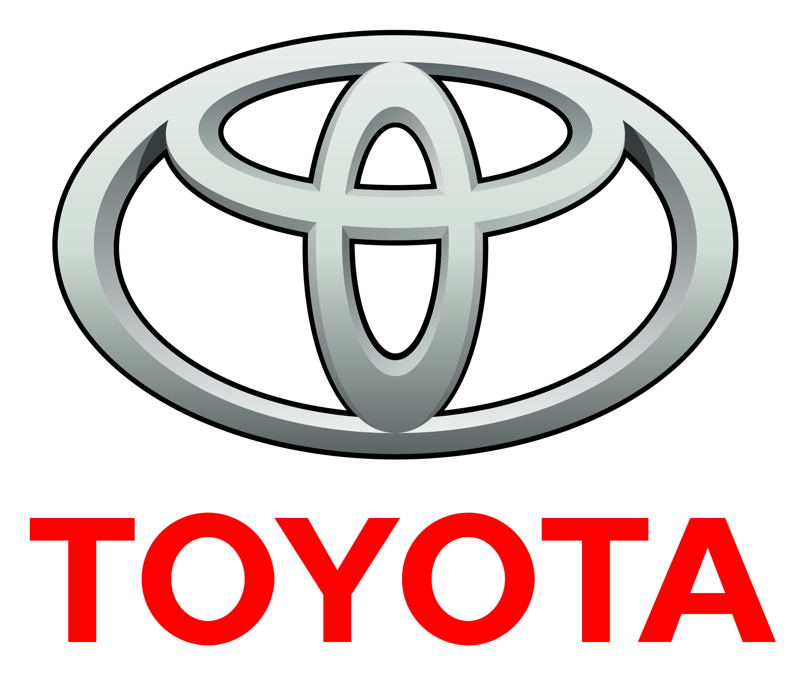

Bienvenido al lugar donde la historia y la elegancia sobre ruedas cobran vida. Aquí encontrarás una cuidada selección de autos clásicos que marcaron época, desde modelos icónicos hasta verdaderas joyas de colección. Nuestro objetivo es compartir la pasión por el motor, la autenticidad y el diseño atemporal que solo los autos clásicos pueden ofrecer.
El Ferrari 328 GTS fue producido entre 1985 y 1989. La versión GTS significa Gran Turismo Spider, con techo targa desmontable diseñado por Pininfarina. Se fabricaron unas 7.400 unidades en total.
Carrocería con líneas fluidas, techo targa desmontable, faros escamoteables y llantas de 16 pulgadas. Colores icónicos: Rosso Corsa, negro y amarillo Giallo.
Tapicería en cuero, tablero analógico completo, aire acondicionado y acabados refinados que lo diferencian del Ferrari 308.
En el mercado de coleccionistas, su precio ronda entre USD 120.000 y 180.000, dependiendo de su estado y originalidad.
El BMW M1 fue presentado en 1978 y se convirtió en el primer superdeportivo de la marca. Diseñado por Giorgetto Giugiaro, nació como un proyecto de competición, pero terminó siendo un ícono tanto en pista como en carretera. Solo se produjeron 453 unidades, lo que lo hace extremadamente exclusivo.
Con carrocería de líneas angulosas y aerodinámicas, el M1 destacaba por sus faros escamoteables, llantas de aleación exclusivas y su distintivo emblema Motorsport. Fue uno de los primeros BMW en lucir la famosa parrilla doble de forma más estilizada.
El habitáculo estaba enfocado en la conducción: tablero deportivo, instrumentación completa y acabados en cuero, ofreciendo una combinación de confort y rendimiento al estilo alemán.
Hoy en día, el BMW M1 es un modelo de culto entre coleccionistas. Su valor supera los USD 500.000, dependiendo del estado y la originalidad.
El Honda NSX, lanzado en 1990, fue un superdeportivo revolucionario. Desarrollado con la ayuda de Ayrton Senna, demostró que un auto japonés podía competir con Ferrari y Porsche en rendimiento y diseño.
Carrocería de aluminio, faros escamoteables y un estilo aerodinámico inspirado en aviones de combate. Fue el primer superdeportivo en producirse con chasis completamente de aluminio.
Cabina ergonómica con gran visibilidad, asientos de cuero y un diseño pensado para el confort en conducción deportiva.
Su cotización ronda entre USD 120.000 y 200.000, siendo muy valorado por su innovación y legado histórico.
El Toyota Supra 1983 (segunda generación, conocida como A60) combina líneas clásicas de los años 80 con una conducción confiable. Disponible como coupé y liftback, se destacó por su equilibrio entre confort y deportividad.

El Nissan 300ZX Twin Turbo de 1994, parte de la generación Z32, es uno de los deportivos japoneses más icónicos de los años 90. Su diseño bajo y ancho, junto a su rendimiento avanzado, lo convirtieron en un referente de la era dorada de los JDM.